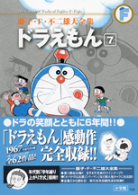

| |

定価：本体1,600円＋税
A5判／590ページ
好評発売中！
★は初めて単行本に収録される
作品です。
※収録内容は変更になる
場合があります。

|
★どうぶつごヘッドホン（小一75年03月号）
桃太郎印のきびだんご（小二75年04月号）
人間機関車（小二75年05月号）
★まるいものじしゃく（小二75年06月号）
ゾウ印口べに（小二75年07月号）
スピードどけい（小二75年08月号）
立体コピー（小二75年09月号）
おおかみ男クリーム（小二75年10月号）
人間用タイムスイッチ（小二75年11月号）
人間切断機（小二75年12月号）
雲の中の散歩（小二76年01月号）
はいどうたづな（小二76年02月号）
かわり絵ミラー（小二76年03月号）
ジャイアンの心の友（小三76年04月号）
ドロン巻き物（小三76年05月号）
ウラオモテックス（小三76年06月号）
カミナリになれよう（小三76年07月号）
ペットそっくりまんじゅう（小三76年08月号）
みらいラジオ（小三76年09月号）
チョージャワラシベ（小三76年10月号）
ちく電スーツ（小三76年11月号）
サンキューバッジ（小三76年12月号）
ジャイアンシチュー（小三77年01月号）
念録マイク（小三77年02月号）
合体ノリ（小三77年03月号）
人生やりなおし機（小四77年04月号）
不幸の手紙同好会（小四77年04月号）
ムードもりあげ楽団登場！（小四77年05月号）
どくさいスイッチ（小四77年06月号）
大むかし漂流記（小四77年07月号）
おかし牧場（小四77年08月号） |
ネコが会社を作ったよ（小四77年09月号）
あちこちひっこそう（小四77年10月号）
持ち主あて機（小四77年11月号）
家がロボットになった（小四77年12月号）
立ちユメぼう（小四78年01月号）
ドラやき・映画・予約ずみ（小四78年02月号）
ドライブはそうじ機に乗って（小四78年03月号）
のび太が九州まで走った！！（小五78年04月号）
主役はめこみ機（小五78年05月号）
コーモンじょう（小五78年06月号）
ルームスイマー（小五78年07月号）
宇宙ターザン（小五78年08月号）
プッシュドア（小五78年09月号）
テレパしい（小五78年10月号）
出前電話（小五78年11月号）
ねむれぬ夜に砂男（小五78年12月号）
ホームメイロ（小五79年01月号）
よい家悪い家（小五79年02月号）
カップルテストバッジ（小五79年03月号）
ラジコンシミュレーターでぶっとばせ
（小六79年04月号）
しつけキャンディー（小六79年05月号）
手作りミサイル大作戦（小六79年06月号）
録験機で楽しもう（小六79年07月号）
ゴルゴンの首（小六79年08月号）
いばり屋のび太（小六79年09月号）
大雪山がやってきた（小六79年10月号）
多目的おまもりは責任感が強い（小六79年11月号）
もはん手紙ペン（小六79年12月号）
影とりプロジェクター（小六80年01月号）
ジャイ子の恋人＝のび太（小六80年02月号）
チューシン倉でかたきうち（小六80年03月号） |